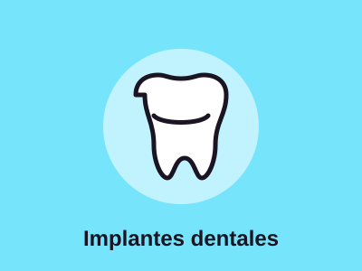
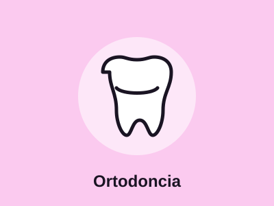
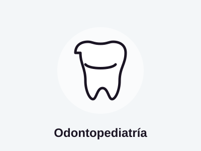
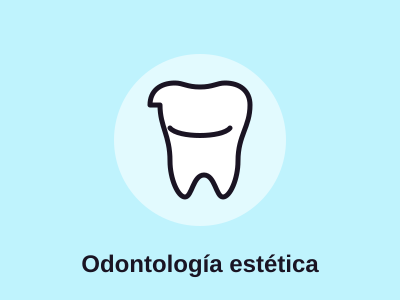

Implantes dentales
Recupera tu sonrisa con implantes totales o parciales colocados con la máxima precisión.
Totales · Parciales
Ver más sobre implantes dentalesClínica DIW
En Clínica DIW cuidamos tu sonrisa con tecnología moderna, un equipo especializado y atención para toda la familia.
Descubre tratamientos
Recupera tu sonrisa con implantes totales o parciales colocados con la máxima precisión.
Totales · Parciales
Ver más sobre implantes dentales
Estudio previo, brackets y ortodoncia invisible para alinear tus dientes.
Estudio previo · Brackets · Invisible
Ver más sobre ortodoncia
Cuidamos la salud bucodental de los más pequeños con revisiones y tratamientos adaptados.
Revisiones · Extracciones · Endodoncia
Ver más sobre odontopediatría
Carillas, blanqueamiento dental, implantes y coronas para una sonrisa luminosa.
Carilla · Blanqueamiento · Coronas
Ver más sobre odontología estética¿Tienes dudas? Llama ahora al 965 000 000 o escríbenos desde el formulario de contacto.